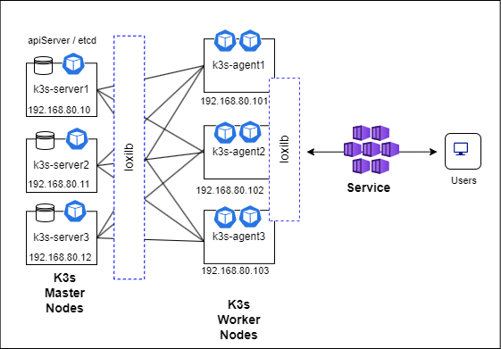

Guide to deploy multi-master HA K3s with loxilb
This document will explain how to install a multi-master HA K3s cluster with loxilb as a serviceLB provider running in-cluster mode. K3s is a lightweight Kubernetes distribution and is increasingly used for prototyping as well as for production workloads. K3s nodes are deployed as 1) k3s-server nodes for k3s control plane components like apiserver and etcd, 2) k3s-agent nodes hosting user workloads/apps. When we deploy multi-master nodes, it is necessary that they be accessed from the k3s-agents in HA configuration and behind a load-balancer. Usually deploying such a load-balancer is outside the scope of kubernetes. In this guide, we will see how to deploy loxilb not only as cluster's serviceLB provider but also as a VIP-LB for accessing server/master node(s) services.
Topology
For multi-master setup we need an odd number of server nodes to maintain quorum. So, we will have 3 k3s-server nodes for this setup. Overall, we will be deploying the components as per the following topology :

K3s installation and Setup
In k3s-server1 node -
$ curl -fL https://get.k3s.io | sh -s - server --node-ip=192.168.80.10 \
--disable servicelb --disable traefik --cluster-init external-hostname=192.168.80.10 \
--node-external-ip=192.168.80.80 --disable-cloud-controller
It is to be noted that --node-external-ip=192.168.80.80 is used since we will utilize 192.168.80.80 as the VIP to access the multi-master setup from k3s-agents and other clients.
Setup the node for loxilb :
sudo mkdir -p /etc/loxilb
Create the following files in /etc/loxilb
- lbconfig.txt with following contents (change as per your requirement)
{
"lbAttr":[
{
"serviceArguments":{
"externalIP":"192.168.80.80",
"port":6443,
"protocol":"tcp",
"sel":0,
"mode":2,
"BGP":false,
"Monitor":true,
"inactiveTimeOut":240,
"block":0
},
"secondaryIPs":null,
"endpoints":[
{
"endpointIP":"192.168.80.10",
"targetPort":6443,
"weight":1,
"state":"active",
"counter":""
},
{
"endpointIP":"192.168.80.11",
"targetPort":6443,
"weight":1,
"state":"active",
"counter":""
},
{
"endpointIP":"192.168.80.12",
"targetPort":6443,
"weight":1,
"state":"active",
"counter":""
}
]
}
]
}
- EPconfig.txt with the following contents (change as per your requirement)
{
"Attr":[
{
"hostName":"192.168.80.10",
"name":"192.168.80.10_tcp_6443",
"inactiveReTries":2,
"probeType":"tcp",
"probeReq":"",
"probeResp":"",
"probeDuration":10,
"probePort":6443
},
{
"hostName":"192.168.80.11",
"name":"192.168.80.11_tcp_6443",
"inactiveReTries":2,
"probeType":"tcp",
"probeReq":"",
"probeResp":"",
"probeDuration":10,
"probePort":6443
},
{
"hostName":"192.168.80.12",
"name":"192.168.80.12_tcp_6443",
"inactiveReTries":2,
"probeType":"tcp",
"probeReq":"",
"probeResp":"",
"probeDuration":10,
"probePort":6443
}
]
}
The above serve as bootstrap LB rules for load-balancing into the k3s-server nodes as we will see later.
In k3s-server2 node -
$ curl -fL https://get.k3s.io | K3S_TOKEN=${NODE_TOKEN} sh -s - server --server https://192.168.80.10:6443 \
--disable traefik --disable servicelb --node-ip=192.168.80.11 \
external-hostname=192.168.80.11 --node-external-ip=192.168.80.80 -t ${NODE_TOKEN}
where NODE_TOKEN contain simply contents of /var/lib/rancher/k3s/server/node-token from server1. For example, it can be set using a command equivalent to the following :
export NODE_TOKEN=$(cat node-token)
Setup the node for loxilb:
Simply follow the steps as outlined for server1.
In k3s-server3 node -
$ curl -fL https://get.k3s.io | K3S_TOKEN=${NODE_TOKEN} sh -s - server --server https://192.168.80.10:6443 \
--disable traefik --disable servicelb --node-ip=192.168.80.12 \
external-hostname=192.168.80.12 --node-external-ip=192.168.80.80 -t ${NODE_TOKEN}
where NODE_TOKEN contain simply contents of /var/lib/rancher/k3s/server/node-token from server1. For example, it can be set using a command equivalent to the following :
export NODE_TOKEN=$(cat node-token)
Setup the node for loxilb:
First, follow the steps as outlined for server1. Additionally, we will have to start loxilb pod instances as follows :
$ sudo kubectl apply -f - <<EOF
apiVersion: apps/v1
kind: DaemonSet
metadata:
name: loxilb-lb
namespace: kube-system
spec:
selector:
matchLabels:
app: loxilb-app
template:
metadata:
name: loxilb-lb
labels:
app: loxilb-app
spec:
hostNetwork: true
dnsPolicy: ClusterFirstWithHostNet
tolerations:
- key: "node-role.kubernetes.io/master"
operator: Exists
- key: "node-role.kubernetes.io/control-plane"
operator: Exists
affinity:
nodeAffinity:
requiredDuringSchedulingIgnoredDuringExecution:
nodeSelectorTerms:
- matchExpressions:
- key: "node-role.kubernetes.io/master"
operator: Exists
- key: "node-role.kubernetes.io/control-plane"
operator: Exists
volumes:
- name: hllb
hostPath:
path: /etc/loxilb
type: DirectoryOrCreate
containers:
- name: loxilb-app
image: "ghcr.io/loxilb-io/loxilb:latest"
imagePullPolicy: Always
command:
- /root/loxilb-io/loxilb/loxilb
args:
- --egr-hooks
- --blacklist=cni[0-9a-z]|veth.|flannel.
volumeMounts:
- name: hllb
mountPath: /etc/loxilb
ports:
- containerPort: 11111
- containerPort: 179
securityContext:
privileged: true
capabilities:
add:
- SYS_ADMIN
---
apiVersion: v1
kind: Service
metadata:
name: loxilb-lb-service
namespace: kube-system
spec:
clusterIP: None
selector:
app: loxilb-app
ports:
- name: loxilb-app
port: 11111
targetPort: 11111
protocol: TCP
EOF
Kindly note that the args for loxilb might change depending on the scenario. This scenario considers loxilb running in-cluster mode. For service-proxy mode, please follow this yaml for exact args. Next, we will install loxilb's operator kube-loxilb as follows :
$ sudo kubectl apply -f - <<EOF
---
apiVersion: v1
kind: ServiceAccount
metadata:
name: kube-loxilb
namespace: kube-system
---
kind: ClusterRole
apiVersion: rbac.authorization.k8s.io/v1
metadata:
name: kube-loxilb
rules:
- apiGroups:
- ""
resources:
- nodes
verbs:
- get
- watch
- list
- patch
- apiGroups:
- ""
resources:
- pods
verbs:
- get
- watch
- list
- patch
- apiGroups:
- ""
resources:
- endpoints
- services
- services/status
verbs:
- get
- watch
- list
- patch
- update
- apiGroups:
- discovery.k8s.io
resources:
- endpointslices
verbs:
- get
- watch
- list
- apiGroups:
- authentication.k8s.io
resources:
- tokenreviews
verbs:
- create
- apiGroups:
- authorization.k8s.io
resources:
- subjectaccessreviews
verbs:
- create
---
kind: ClusterRoleBinding
apiVersion: rbac.authorization.k8s.io/v1
metadata:
name: kube-loxilb
roleRef:
apiGroup: rbac.authorization.k8s.io
kind: ClusterRole
name: kube-loxilb
subjects:
- kind: ServiceAccount
name: kube-loxilb
namespace: kube-system
---
apiVersion: apps/v1
kind: Deployment
metadata:
name: kube-loxilb
namespace: kube-system
labels:
app: loxilb
spec:
replicas: 1
selector:
matchLabels:
app: loxilb
template:
metadata:
labels:
app: loxilb
spec:
hostNetwork: true
dnsPolicy: ClusterFirstWithHostNet
tolerations:
- effect: NoSchedule
operator: Exists
# Mark the pod as a critical add-on for rescheduling.
- key: CriticalAddonsOnly
operator: Exists
- effect: NoExecute
operator: Exists
- key: "node-role.kubernetes.io/master"
operator: Exists
- key: "node-role.kubernetes.io/control-plane"
operator: Exists
affinity:
nodeAffinity:
requiredDuringSchedulingIgnoredDuringExecution:
nodeSelectorTerms:
- matchExpressions:
- key: "node-role.kubernetes.io/master"
operator: Exists
- key: "node-role.kubernetes.io/control-plane"
operator: Exists
priorityClassName: system-node-critical
serviceAccountName: kube-loxilb
terminationGracePeriodSeconds: 0
containers:
- name: kube-loxilb
image: ghcr.io/loxilb-io/kube-loxilb:latest
imagePullPolicy: Always
command:
- /bin/kube-loxilb
args:
- --externalCIDR=192.168.80.200/32
- --setRoles=0.0.0.0
resources:
requests:
cpu: "100m"
memory: "50Mi"
limits:
cpu: "100m"
memory: "50Mi"
securityContext:
privileged: true
capabilities:
add: ["NET_ADMIN", "NET_RAW"]
EOF
At this point we can check the pods running in our kubernetes cluster (in server1, server2 & server3 at this point):
$ sudo kubectl get pods -A
NAMESPACE NAME READY STATUS RESTARTS AGE
kube-system coredns-6799fbcd5-7jhcx 1/1 Running 0 3h15m
kube-system kube-loxilb-5d99c445f7-j4x6k 1/1 Running 0 3h6m
kube-system local-path-provisioner-6c86858495-pjn9j 1/1 Running 0 3h15m
kube-system loxilb-lb-8bddf 1/1 Running 0 3h6m
kube-system loxilb-lb-nsrr9 1/1 Running 0 3h6m
kube-system loxilb-lb-fp2z6 1/1 Running 0 3h6m
kube-system metrics-server-54fd9b65b-g5lfn 1/1 Running 0 3h15m
In k3s-agent1 node -
The following steps need to be followed to install k3s in the agent nodes:
$ curl -sfL https://get.k3s.io | K3S_TOKEN=${NODE_TOKEN} sh -s - agent --server https://192.168.80.80:6443 --node-ip=${WORKER_ADDR} --node-external-ip=${WORKER_ADDR} -t ${NODE_TOKEN}
where WORKER_ADDR is the IP address of the agent node itself (in this case 192.168.80.101) and NODE_TOKEN has contents of /var/lib/rancher/k3s/server/node-token from server1.
It is also to be noted that we use VIP - 192.168.80.80 provided by loxilb to access the server(master) K3s nodes and not the actual private node addresses.
For rest of the agent nodes, we can follow the same set of steps as outlined above for k3s-agent1.
Validation
After setting up all the k3s-server and k3s-agents, we should be able to see all nodes up and running
$ sudo kubectl get nodes -A
NAME STATUS ROLES AGE VERSION
master1 Ready control-plane,etcd,master 4h v1.29.3+k3s1
master2 Ready control-plane,etcd,master 4h v1.29.3+k3s1
master3 Ready control-plane,etcd,master 4h v1.29.3+k3s1
worker1 Ready <none> 4h v1.29.3+k3s1
worker2 Ready <none> 4h v1.29.3+k3s1
worker3 Ready <none> 4h v1.29.3+k3s1
To verify, let's shutdown master1 k3s-server.
## Run shutdown the master1 node
$ sudo shutdown -t now
And try to access cluster information from other master nodes or worker nodes :
$ sudo kubectl get nodes -A
NAME STATUS ROLES AGE VERSION
master1 NotReady control-plane,etcd,master 4h10m v1.29.3+k3s1
master2 Ready control-plane,etcd,master 4h10m v1.29.3+k3s1
master3 Ready control-plane,etcd,master 4h10m v1.29.3+k3s1
worker1 Ready <none> 4h10m v1.29.3+k3s1
worker2 Ready <none> 4h10m v1.29.3+k3s1
Also, we can confirm pods getting rescheduled to other "ready" nodes :
$ sudo kubectl get pods -A -o wide
NAMESPACE NAME READY STATUS RESTARTS AGE IP NODE NOMINATED NODE READINESS GATES
kube-system coredns-6799fbcd5-6dvm7 1/1 Running 0 27m 10.42.2.2 master3 <none> <none>
kube-system coredns-6799fbcd5-mrjgt 1/1 Terminating 0 3h58m 10.42.0.4 master1 <none> <none>
kube-system kube-loxilb-5d99c445f7-x7qd6 1/1 Running 0 3h58m 192.168.80.11 master2 <none> <none>
kube-system local-path-provisioner-6c86858495-6f8rz 1/1 Terminating 0 3h58m 10.42.0.2 master1 <none> <none>
kube-system local-path-provisioner-6c86858495-z2p6m 1/1 Running 0 27m 10.42.3.2 worker1 <none> <none>
kube-system loxilb-lb-65jnz 1/1 Running 0 3h58m 192.168.80.10 master1 <none> <none>
kube-system loxilb-lb-pfkf8 1/1 Running 0 3h58m 192.168.80.12 master3 <none> <none>
kube-system loxilb-lb-xhr95 1/1 Running 0 3h58m 192.168.80.11 master2 <none> <none>
kube-system metrics-server-54fd9b65b-l5pqz 1/1 Running 0 27m 10.42.4.2 worker2 <none> <none>
kube-system metrics-server-54fd9b65b-x9bd7 1/1 Terminating 0 3h58m 10.42.0.3 master1 <none> <none>
If the above set of command works fine in any of the "ready" nodes, it indicates that the api server is available even when one of k3s server (master) goes down. The same can be followed if need be for any services apart from K8s/K3s apiserver as well.